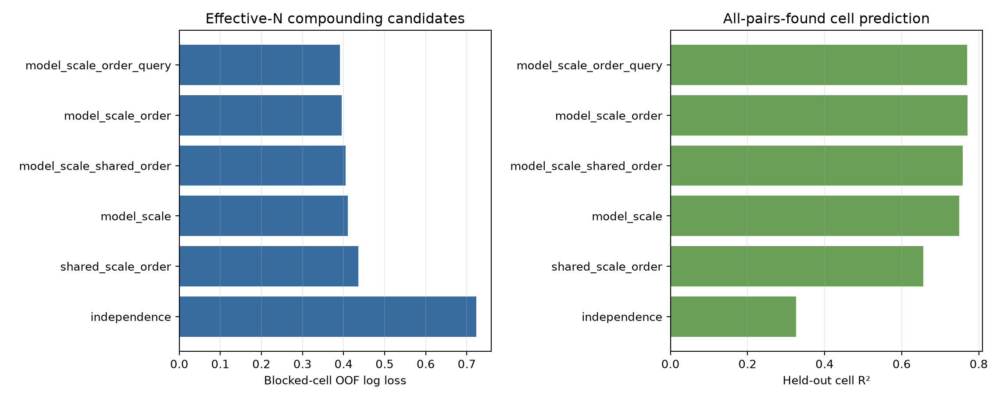
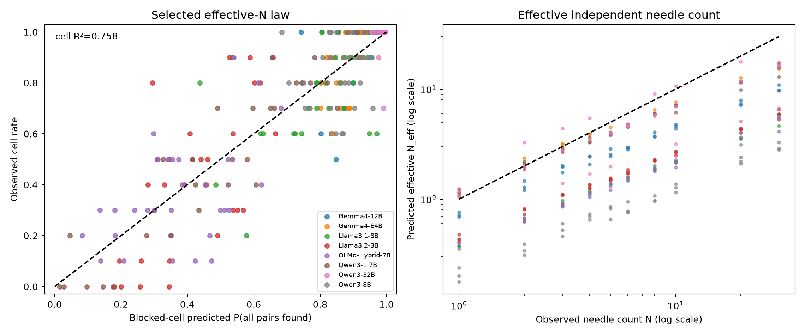
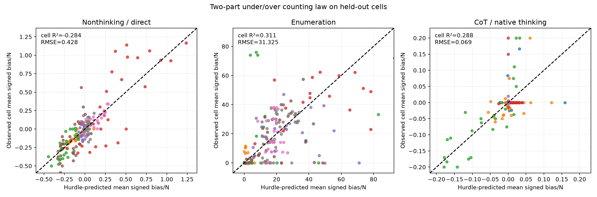
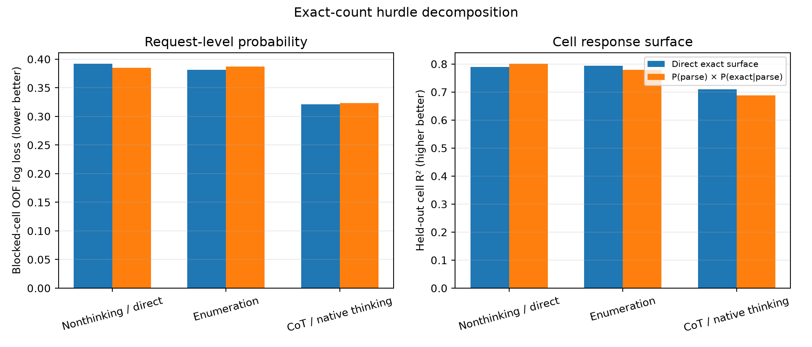
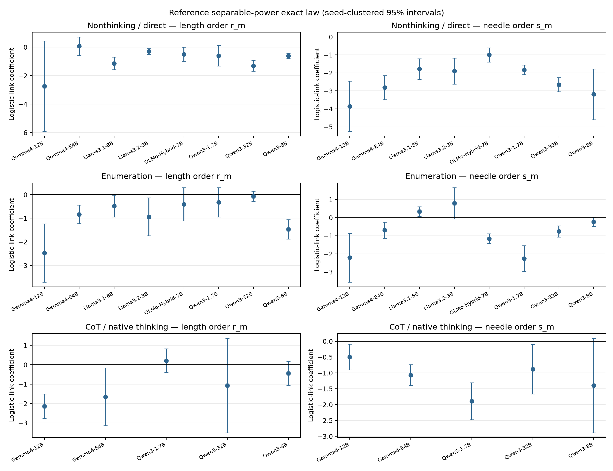

q^N 对 all-pairs-found 的 held-out cell R² 较低；单一 signed-bias 曲面也因欠计与多计抵消而不稳定。第二阶段在看到这些失败后单独冻结，只比较 N_eff=κN^τ 与 under/over hurdle 两个有机制含义的小型候选族。
选择结果：model_scale_shared_order；blocked-cell OOF log loss=0.4047，cell R²=0.7585。共享 needle 阶数的 seed-cluster bootstrap 中位数为 τ=0.747（95% percentile interval 0.641–0.850）。若 N_eff/N<1，表示一次共同难度会让多个 needle 的成功/失败正相关，因此“有效独立试验数”少于实际 needle 数；它是经验相关性参数，不是网络内部单元数。
| candidate | link | complexity | description | selection_score | selection_se | log_loss | brier | cell_r2 | cell_rmse | cell_mae | n_cells | converged_all_folds |
|---|---|---|---|---|---|---|---|---|---|---|---|---|
| model_scale_order_query | compounding | 4 | N_eff=kappa_m N^tau_m exp(o_m I(query-last)) | 0.3907 | 0.0108 | 0.3907 | 0.1266 | 0.7700 | 0.1442 | 0.1025 | 240 | False |
| model_scale_order | compounding | 3 | N_eff=kappa_m N^tau_m | 0.3955 | 0.0123 | 0.3955 | 0.1267 | 0.7707 | 0.1440 | 0.1025 | 240 | True |
| model_scale_shared_order | compounding | 2 | N_eff=kappa_m N^tau | 0.4047 | 0.0136 | 0.4047 | 0.1294 | 0.7585 | 0.1478 | 0.1098 | 240 | True |
| model_scale | compounding | 1 | N_eff=kappa_m N | 0.4097 | 0.0133 | 0.4097 | 0.1306 | 0.7495 | 0.1505 | 0.1087 | 240 | True |
| shared_scale_order | compounding | 2 | N_eff=kappa N^tau | 0.4362 | 0.0205 | 0.4362 | 0.1419 | 0.6556 | 0.1765 | 0.1293 | 240 | True |
| independence | compounding | 0 | N_eff=N | 0.7230 | 0.0508 | 0.7230 | 0.1803 | 0.3263 | 0.2468 | 0.1792 | 240 | True |


| model_label | selected_candidate | kappa | tau | query_last_log_neff_effect | neff_at_N1_query_first | neff_at_N5_query_first | neff_at_N30_query_first | neff_over_N_at_N30 | bootstrap_draws | kappa_median | kappa_ci95_low | kappa_ci95_high | tau_median | tau_ci95_low | tau_ci95_high |
|---|---|---|---|---|---|---|---|---|---|---|---|---|---|---|---|
| Gemma4-12B | model_scale_shared_order | 0.7923 | 0.7475 | 0.0000 | 0.7923 | 2.6385 | 10.0693 | 0.3356 | 400 | 0.7378 | 0.4028 | 1.5694 | 0.7475 | 0.6406 | 0.8496 |
| Gemma4-E4B | model_scale_shared_order | 1.2744 | 0.7475 | 0.0000 | 1.2744 | 4.2437 | 16.1954 | 0.5398 | 400 | 1.2492 | 0.7073 | 2.1216 | 0.7475 | 0.6406 | 0.8496 |
| Llama3.1-8B | model_scale_shared_order | 0.4089 | 0.7475 | 0.0000 | 0.4089 | 1.3618 | 5.1971 | 0.1732 | 400 | 0.4186 | 0.2133 | 0.8439 | 0.7475 | 0.6406 | 0.8496 |
| Llama3.2-3B | model_scale_shared_order | 0.4664 | 0.7475 | 0.0000 | 0.4664 | 1.5532 | 5.9274 | 0.1976 | 400 | 0.4677 | 0.3610 | 0.5900 | 0.7475 | 0.6406 | 0.8496 |
| OLMo-Hybrid-7B | model_scale_shared_order | 0.3952 | 0.7475 | 0.0000 | 0.3952 | 1.3161 | 5.0228 | 0.1674 | 400 | 0.3952 | 0.2930 | 0.5621 | 0.7475 | 0.6406 | 0.8496 |
| Qwen3-1.7B | model_scale_shared_order | 1.2200 | 0.7475 | 0.0000 | 1.2200 | 4.0629 | 15.5051 | 0.5168 | 400 | 1.1978 | 0.7086 | 2.1628 | 0.7475 | 0.6406 | 0.8496 |
| Qwen3-32B | model_scale_shared_order | 1.2302 | 0.7475 | 0.0000 | 1.2302 | 4.0968 | 15.6347 | 0.5212 | 400 | 1.2182 | 0.2786 | 2.4743 | 0.7475 | 0.6406 | 0.8496 |
| Qwen3-8B | model_scale_shared_order | 0.2253 | 0.7475 | 0.0000 | 0.2253 | 0.7501 | 2.8627 | 0.0954 | 400 | 0.2275 | 0.1217 | 0.4146 | 0.7475 | 0.6406 | 0.8496 |
概率项使用 grouped logistic law；幅度项拟合 log(1+|error|/N) 并以 training-only Duan smearing 反变换。这样不会让符号抵消掩盖 L、N 对错误频率和错误幅度的不同作用。
| mode | method | target | rmse | mae | r2 | n_cells |
|---|---|---|---|---|---|---|
| direct | model_only_hurdle | cell_mean_relative_absolute_error | 0.2689 | 0.1494 | 0.4442 | 213 |
| direct | selected_hurdle | cell_mean_relative_absolute_error | 0.4176 | 0.1260 | -0.3410 | 213 |
| direct | model_only_hurdle | cell_mean_signed_relative_bias | 0.2937 | 0.1634 | 0.3964 | 213 |
| direct | selected_hurdle | cell_mean_signed_relative_bias | 0.4282 | 0.1407 | -0.2836 | 213 |
| direct | single_signed_surface | cell_mean_signed_relative_bias | 0.2916 | 0.1629 | 0.4048 | 213 |
| enumeration | model_only_hurdle | cell_mean_relative_absolute_error | 34.9474 | 13.0320 | 0.1428 | 237 |
| enumeration | selected_hurdle | cell_mean_relative_absolute_error | 31.3236 | 11.4607 | 0.3114 | 237 |
| enumeration | model_only_hurdle | cell_mean_signed_relative_bias | 34.9621 | 13.0431 | 0.1423 | 237 |
| enumeration | selected_hurdle | cell_mean_signed_relative_bias | 31.3251 | 11.4652 | 0.3114 | 237 |
| enumeration | single_signed_surface | cell_mean_signed_relative_bias | 34.9802 | 13.0594 | 0.1414 | 237 |
| native_thinking | model_only_hurdle | cell_mean_relative_absolute_error | 0.0718 | 0.0386 | 0.1210 | 150 |
| native_thinking | selected_hurdle | cell_mean_relative_absolute_error | 0.0677 | 0.0306 | 0.2174 | 150 |
| native_thinking | model_only_hurdle | cell_mean_signed_relative_bias | 0.0795 | 0.0405 | 0.0435 | 150 |
| native_thinking | selected_hurdle | cell_mean_signed_relative_bias | 0.0686 | 0.0309 | 0.2880 | 150 |
| native_thinking | single_signed_surface | cell_mean_signed_relative_bias | 0.0795 | 0.0405 | 0.0434 | 150 |

条件幅度候选（每个 mode×方向最低 held-out score 的行）：
| mode | direction | candidate | seed_r2 | cell_r2 | seed_nrmse | cell_nrmse |
|---|---|---|---|---|---|---|
| direct | under | inverse_separable | 0.6032 | 0.6223 | 0.6299 | 0.6146 |
| direct | over | inverse_separable | 0.5755 | 0.6622 | 0.6516 | 0.5812 |
| enumeration | under | inverse_separable | 0.4711 | 0.4726 | 0.7272 | 0.7262 |
| enumeration | over | root_separable | 0.4344 | 0.5040 | 0.7521 | 0.7043 |
| native_thinking | under | intercept_only | 0.0239 | 0.1064 | 0.9880 | 0.9453 |
| native_thinking | over | log_density | -0.0574 | -0.5696 | 1.0283 | 1.2528 |
| mode | method | log_loss | brier | cell_r2 | cell_rmse | cell_mae | n_cells |
|---|---|---|---|---|---|---|---|
| direct | parse_times_conditional_exact | 0.3848 | 0.1189 | 0.8002 | 0.1527 | 0.1040 | 240 |
| direct | stage1_nested_direct_surface | 0.3917 | 0.1217 | 0.7891 | 0.1569 | 0.1052 | 240 |
| enumeration | parse_times_conditional_exact | 0.3873 | 0.1243 | 0.7786 | 0.1672 | 0.1212 | 240 |
| enumeration | stage1_nested_direct_surface | 0.3814 | 0.1219 | 0.7937 | 0.1613 | 0.1165 | 240 |
| native_thinking | parse_times_conditional_exact | 0.3230 | 0.1007 | 0.6875 | 0.1511 | 0.1008 | 150 |
| native_thinking | stage1_nested_direct_surface | 0.3210 | 0.0993 | 0.7090 | 0.1458 | 0.0976 | 150 |

即使 one-standard-error 规则选择了 density、burden、root 或 piecewise 坐标，我们仍额外报告同一个 separable-power logistic 参考式，以便跨模型比较 r_m 与 s_m；它不是为了替换 held-out 最佳 law。置信区间按 5 个 seed 聚类，因此只应视为有限簇的稳健性诊断。

| mode | model_label | term | estimate | cluster_seed_se | ci95_low | ci95_high |
|---|---|---|---|---|---|---|
| Nonthinking / direct | Gemma4-12B | length order r_m | -2.7392 | 1.6238 | -5.9218 | 0.4434 |
| Nonthinking / direct | Gemma4-12B | needle order s_m | -3.8582 | 0.7137 | -5.2570 | -2.4593 |
| Nonthinking / direct | Gemma4-E4B | length order r_m | 0.0695 | 0.3327 | -0.5827 | 0.7216 |
| Nonthinking / direct | Gemma4-E4B | needle order s_m | -2.8149 | 0.3411 | -3.4835 | -2.1463 |
| Nonthinking / direct | Llama3.1-8B | length order r_m | -1.1379 | 0.2260 | -1.5808 | -0.6950 |
| Nonthinking / direct | Llama3.1-8B | needle order s_m | -1.7867 | 0.2905 | -2.3560 | -1.2174 |
| Nonthinking / direct | Llama3.2-3B | length order r_m | -0.2935 | 0.1019 | -0.4932 | -0.0938 |
| Nonthinking / direct | Llama3.2-3B | needle order s_m | -1.9021 | 0.3703 | -2.6280 | -1.1763 |
| Nonthinking / direct | OLMo-Hybrid-7B | length order r_m | -0.4918 | 0.2534 | -0.9884 | 0.0048 |
| Nonthinking / direct | OLMo-Hybrid-7B | needle order s_m | -0.9984 | 0.1990 | -1.3885 | -0.6083 |
| Nonthinking / direct | Qwen3-1.7B | length order r_m | -0.5986 | 0.3691 | -1.3219 | 0.1248 |
| Nonthinking / direct | Qwen3-1.7B | needle order s_m | -1.8321 | 0.1361 | -2.0988 | -1.5654 |
| Nonthinking / direct | Qwen3-32B | length order r_m | -1.2997 | 0.1965 | -1.6848 | -0.9145 |
| Nonthinking / direct | Qwen3-32B | needle order s_m | -2.6608 | 0.2014 | -3.0556 | -2.2661 |
| Nonthinking / direct | Qwen3-8B | length order r_m | -0.6005 | 0.0876 | -0.7722 | -0.4289 |
| Nonthinking / direct | Qwen3-8B | needle order s_m | -3.1934 | 0.7229 | -4.6103 | -1.7764 |
| Enumeration | Gemma4-12B | length order r_m | -2.4739 | 0.6284 | -3.7055 | -1.2423 |
| Enumeration | Gemma4-12B | needle order s_m | -2.2118 | 0.6894 | -3.5630 | -0.8607 |
| Enumeration | Gemma4-E4B | length order r_m | -0.8334 | 0.1991 | -1.2237 | -0.4431 |
| Enumeration | Gemma4-E4B | needle order s_m | -0.6896 | 0.2259 | -1.1324 | -0.2468 |
| Enumeration | Llama3.1-8B | length order r_m | -0.4785 | 0.2365 | -0.9420 | -0.0150 |
| Enumeration | Llama3.1-8B | needle order s_m | 0.3377 | 0.1366 | 0.0699 | 0.6056 |
| Enumeration | Llama3.2-3B | length order r_m | -0.9395 | 0.4114 | -1.7458 | -0.1331 |
| Enumeration | Llama3.2-3B | needle order s_m | 0.7952 | 0.4422 | -0.0716 | 1.6620 |
| Enumeration | OLMo-Hybrid-7B | length order r_m | -0.4062 | 0.3603 | -1.1125 | 0.3000 |
| Enumeration | OLMo-Hybrid-7B | needle order s_m | -1.1630 | 0.1352 | -1.4280 | -0.8980 |
| Enumeration | Qwen3-1.7B | length order r_m | -0.3198 | 0.3154 | -0.9380 | 0.2983 |
| Enumeration | Qwen3-1.7B | needle order s_m | -2.2610 | 0.3654 | -2.9772 | -1.5448 |
| Enumeration | Qwen3-32B | length order r_m | -0.0662 | 0.1115 | -0.2847 | 0.1523 |
| Enumeration | Qwen3-32B | needle order s_m | -0.7560 | 0.1572 | -1.0641 | -0.4479 |
| Enumeration | Qwen3-8B | length order r_m | -1.4632 | 0.2091 | -1.8730 | -1.0535 |
| Enumeration | Qwen3-8B | needle order s_m | -0.2316 | 0.1288 | -0.4840 | 0.0208 |
| CoT / native thinking | Gemma4-12B | length order r_m | -2.1413 | 0.3255 | -2.7792 | -1.5035 |
| CoT / native thinking | Gemma4-12B | needle order s_m | -0.4957 | 0.2070 | -0.9014 | -0.0901 |
| CoT / native thinking | Gemma4-E4B | length order r_m | -1.6536 | 0.7639 | -3.1508 | -0.1565 |
| CoT / native thinking | Gemma4-E4B | needle order s_m | -1.0677 | 0.1667 | -1.3944 | -0.7409 |
| CoT / native thinking | Qwen3-1.7B | length order r_m | 0.2144 | 0.3110 | -0.3951 | 0.8238 |
| CoT / native thinking | Qwen3-1.7B | needle order s_m | -1.8902 | 0.2975 | -2.4734 | -1.3071 |
| CoT / native thinking | Qwen3-32B | length order r_m | -1.0716 | 1.2461 | -3.5140 | 1.3708 |
| CoT / native thinking | Qwen3-32B | needle order s_m | -0.8774 | 0.3994 | -1.6603 | -0.0945 |
| CoT / native thinking | Qwen3-8B | length order r_m | -0.4432 | 0.3114 | -1.0535 | 0.1671 |
| CoT / native thinking | Qwen3-8B | needle order s_m | -1.3972 | 0.7609 | -2.8886 | 0.0941 |